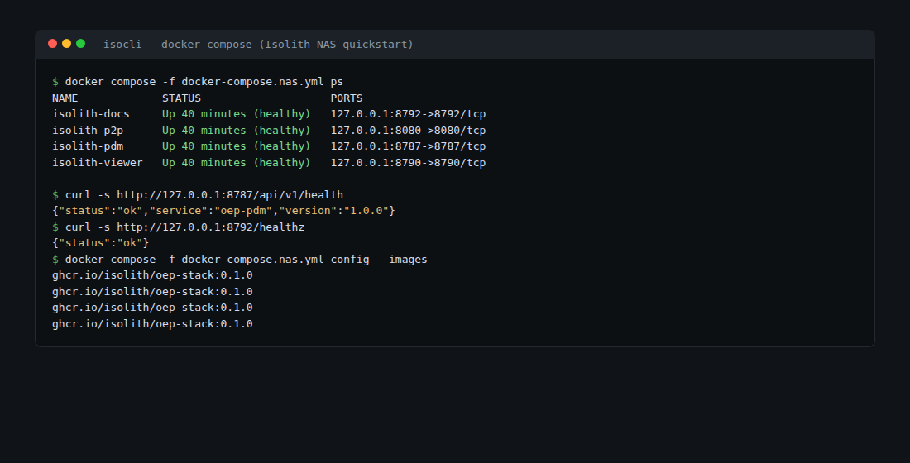

Guide 3 of 4
Isolith's server component (PDM, P6 preview viewer, docs, workers) is one
Docker image, isolith/oep-stack, published to GHCR per
release. You host it on your own NAS or server - Synology Container
Manager, QNAP Container Station, TrueNAS, Unraid, or plain
docker compose on any Linux host. There is no Docker Hub, no
forced cloud account, and nothing phones home.
What this is not: this page is for you hosting Isolith on your hardware. It has nothing to do with the Isolith team's own infrastructure and does not change any of their policies.
arm64
(build-verified and run-verified on the delivery reference host) and is
built for amd64 by the same Dockerfile. See
workstreams/delivery/deploy/nas-deployment.md section 2 for
the honest status if your NAS is x86_64.# 1. get the compose file and env template
curl -O https://raw.githubusercontent.com/isolith/isolith/main/workstreams/delivery/deploy/deploy/docker-compose.nas.yml
curl -O https://raw.githubusercontent.com/isolith/isolith/main/workstreams/delivery/deploy/deploy/.env.nas.example
cp .env.nas.example .env
# 2. (optional) to serve the team on the LAN, edit .env: set OEP_*_BIND to your
# NAS LAN IP (default is 127.0.0.1 = LAN-off until you publish it)
# 3. pull the image and start the stack
docker compose -f docker-compose.nas.yml pull
docker compose -f docker-compose.nas.yml up -d
# 4. wait until every service is healthy
docker compose -f docker-compose.nas.yml ps # all four show (healthy)isolith.docker-compose.nas.yml and .env (copy the two
files from section 2 into that folder first).pdm_data and viewer_data volumes, and starts
the four services.healthy (the health checks run every 5s).nas-deployment.md section 4.The compose-equivalent view of a green stack (real output from the delivery reference host):

| Service | Binary | Host address (default) | Health surface |
|---|---|---|---|
pdm | oep-pdm | 127.0.0.1:8787 | GET /api/v1/health |
viewer | oep-web | 127.0.0.1:8790 | GET / (200) |
p2p | oep-opsdash | 127.0.0.1:8080 | GET /healthz |
docs | oep-docs | 127.0.0.1:8792 | GET /healthz |
PDM authorization is on by default (the REST v1 surface
requires the identity headers); the stack never adds
--no-auth, so your vault is not left open on the LAN.
Back up the named volume pdm_data (the whole vault: metadata,
content-addressed blobs, audit chain) plus your .env; put the
copies on a different physical disk/volume set. For upgrades: edit
OEP_VERSION in .env, docker compose pull,
then up -d. To roll back, keep the previous version in
.env and restart - the volume is untouched. Full details:
workstreams/delivery/deploy/nas-deployment.md sections 5-6.